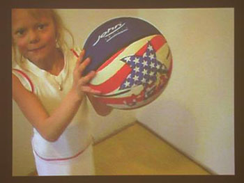

|
|
|
European Attitude
23.02. 2008 - 16.03 2008
"European Attitude", Zendai Museum of Modern Art, Shanghai, RC
Exhibition: European Attitude Presented by: Shanghai Zendai Museum of Modern Art
Dates: 23 February – 16 March 2008
Venue: Shanghai Zendai Museum of Modern Art (No.28, Lane 199 Fangdian Road, 200135 Shanghai, China)
www.zendaiart.com
Opening Reception: 23 February, 2008 (Saturday), 4pm
Artistic Director: Shen Qibin
Academic Director: Binghui Huangfu
Curators: Harro Schmidt & Tomek Wendland
Project Manager: Chen Shuxia
|
Special thanks to the co-curators Richard Birkett, Janos Stursz and Georg Elben
Artists:Roger Bourke (GB)
Elodie Boutry (F)
Noam Braslawsky (IL/D)
Katja Davar (GB/D)
Clemens Fuertler (A)
Masha Godovannaya (RUS)
Hlynur Hallsson (IS)
Anna Klimczak (PL)
Nina Kovacheva & Valentin Stefanoff (F/BG)
Ingo Lie (D)
Nadia Verena Marcin (D)
Agata Michowska (PL)
Ursula Neugebauer (D)
Mateusz Pek (PL)
Andrzej Peplonski (PL)
Volker Schreiner (D)
Alexander Steig (D)
Eva Stenram (S/GB)
Jaan Toomik (EST)
Iskender Yediler (TR)
Martin Zet (CZ)
|
Europe is an expanding entity both constitutionally and attitudinally. The common public perception is that the European "project", should, both economically and socially, be based along lines of commonality and is therefore a means to overcome difference. Europe is unified by common capitalistic desires and market forces, and yet divided by blindness to the complexities of regional history and resulting financial and social poverty.
Within this hugely prejudicial framework that sets conforming criteria for countries wishing to enter the European Union, cultural production plays an important role in its exploration of heterogeneity and through a localised response to differing experiences of modernism. The forms and processes of 20th Century avant-gardism still play an important role in anactive desire to understand the utopian or totalitarian forces that have shaped both the physical and mental fabrics of our societies. Abstraction and simple geometries are loaded with a historical idealism now warped by political appropriation, commercial design and pseudo-spirituality.
The artist increasingly plays the role of the instigator and narrator of social relationships and encounters, assessing the ways in which we live and work, and the circumstances around us that impact on this. It is a paradox that the often provincial nature of such interaction provides telling insight into the wider human condition. Therefore we present the artistic practice of 21 artists from 12 different European countries to initiate the discussion on identity of artists within the global political circumstances.
|
 |